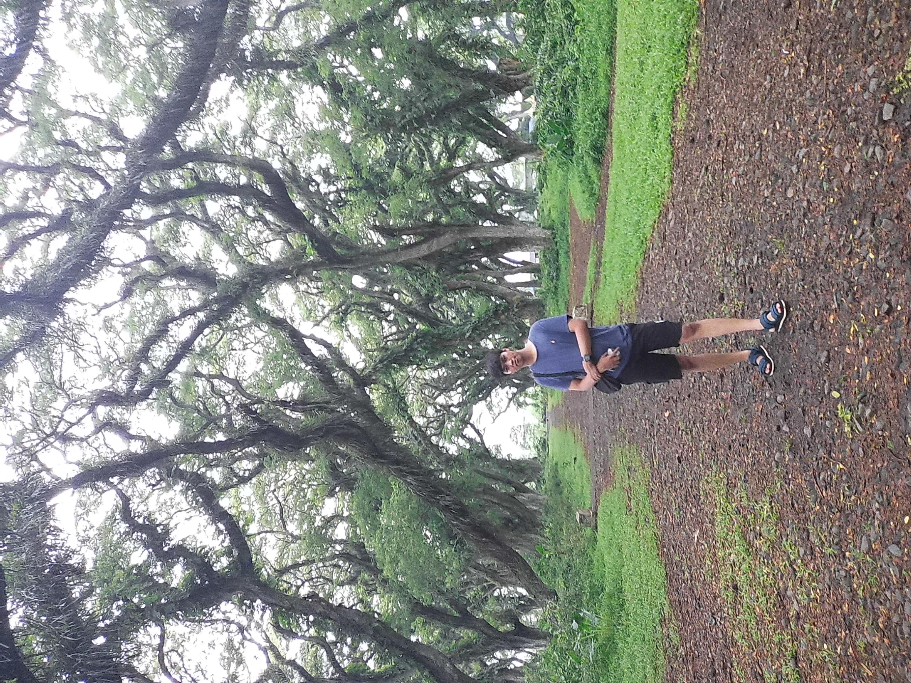

Niko Dana Khosasih

Summary
I'm beginner of Web Developer. But i'm keep learning to keep match with Web Developer Skills!
Education
- Bechelor of Computer Systems - Budi Luhur University (2016-2020)
Work Experience
Student Intern - Ministry of Public Works and Public Housing
October 2015 (1 Month)
- Filling Document
- Administrative
- Create and sending letter
-
IT Operational - Binaartha Sekuritas, PT
January 2021 - Current
- Server Administrator
- Database Administrator
- Troubleshoter
- Coordinate with 3rd party vendor
Skills
- Windows&Linux Server
- Virtualization (HyperV, Proxmox)
- Mikrotik, Routers
- Postman
- MySQL, SQL Server
Other